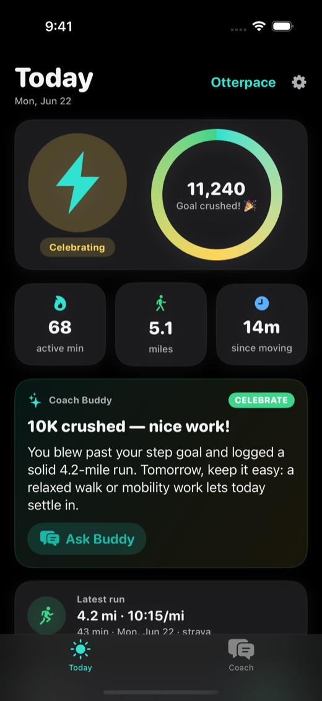
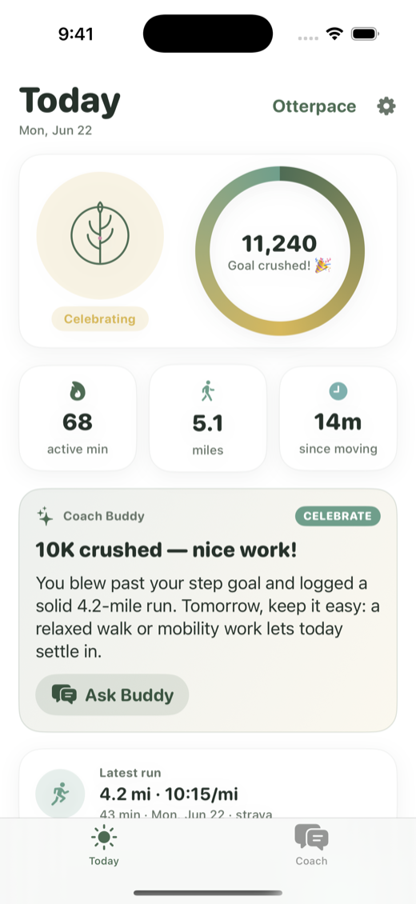

Otterpace ships as one app in five complete identities — colors, type and mascot all shift together. Wear the one that fits your mood.




“A coach should back off when you’re tired, cheer when you win, and never make you feel bad for a rest day.”
Practical run/rest guidance that eases off when your training load spikes.
Conversational answers in plain language. Works offline; smarter with your own AI key.
Move toward your step goal with reminders that encourage, not scold.
What went well, what changed, and one kind focus for the week ahead.
Apple Health read locally, never uploaded. No accounts, no ads, no data sold.
Built in the open as a CodeYam showcase — read every line.